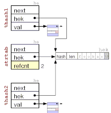

This document is meant to supplement the perlguts(1) manual page that comes with Perl. It contains commented illustrations of all major internal Perl data structures. Having this document handy hopefully makes reading the Perl source code easier. It might also help you interpret the Devel::Peek dumps.
Most of the internal perl structures had been refactored twice, with 5.10, and 5.14. The comparison links and illustrations for 5.8, 5.10 and 5.14 are now included in this single document, but also available as extra files:
The first things to look at are the data structures that represent
Perl data; scalars of various kinds, arrays and hashes. Internally
Perl calls a scalar SV (scalar value), an array AV
(array value) and a hash HV (hash value). In addition it uses
IV for integer value, NV for numeric value (aka double),
PV for a pointer value (aka string value (char*), but 'S' was
already taken), and RV for reference value. The IVs are
further guaranteed to be big enough to hold a void* pointer.
The internal relationship between the Perl data types is really object oriented. Perl relies on using C's structural equivalence to help emulate something like C++ inheritance of types. The various data types that Perl implement are illustrated in this class hierarchy diagram. The arrows indicate inheritance (IS-A relationships).
As you can see, Perl uses multiple inheritance with SvNULL (also named just SV) acting as some kind of virtual base class. All the Perl types are identified by small numbers, and the internal Perl code often gets away with testing the ISA-relationship between types with the <= operator. As you can see from the figure above, this can only work reliably for some comparisons. All Perl data value objects are tagged with their type, so you can always ask an object what its type is and act according to this information.
The symbolic SvTYPE names (and associated value) are:
- 0) SVt_NULL
- 1) SVt_BIND
- 2) SVt_IV
- 3) SVt_NV
- 4) SVt_PV
- 5) SVt_PVIV
- 6) SVt_PVNV
- 7) SVt_PVMG
- 8) SVt_PVREGEXP (P5RX)
- 9) SVt_PVGV
- 10) SVt_PVLV
- 11) SVt_PVAV
- 12) SVt_PVHV
- 13) SVt_PVCV
- 14) SVt_PVFM
- 15) SVt_PVIO
In addition to the simple type names already mentioned, the following names are found in the hierarchy figure: An PVIV value can hold a string and an integer value. An PVNV value can hold a string, an integer and a double value. The PVMG is used when magic is attached or the value is blessed. The PVLV represents a LValue object. RV is now a seperate scalar of type SVt_IV. CV is a code value, which represents a perl function/subroutine/closure or contains a pointer to an XSUB. GV is a glob value and IO contains pointers to open files and directories and various state information about these. The PVFM is used to hold information on forms. P5RX was formerly called PVBM for Boyer-Moore (match information), but contains now more information. Internally it is called ORANGE. BIND is a placeholder for aliases, and implemented as RV for now. (#29544, #29642)
A Perl data object can change type as the value is modified. The SV is said to be upgraded in this case. Type changes only go down the hierarchy. (See the sv_upgrade() function in sv.c.)
The actual layout in memory does not really match how a typical C++ compiler would implement a hierarchy like the one depicted above. Let's see how it is done.
In the description below we use field names that match the macros that are used to access the corresponding field. For instance thexpv_curfield of thexpvXXstructs are accessed with theSvCUR()macro. The field is referred to as CUR in the description below. This also match the field names reported by the Devel::Peek module.
The simplest type is the "struct sv". It represents the common structure for a SV, GV, CV, AV, HV, IO and P5RX, without any struct xpv<xx> attached to it. It consist of four words, the _SV_HEAD with 3 values and the SV_U union with one pointer.
_SV_HEAD and SV_U unionThe first word contains the ANY pointer to the optional body. All types are implemented by attaching additional data to the ANY pointer, just the RV not.
The second word is an 32 bit unsigned integer reference counter (REFCNT) which should tell us how many pointers reference this object. When Perl data types are created this value is initialized to 1. The field must be incremented when a new pointer is made to point to it and decremented when the pointer is destroyed or assigned a different value. When the reference count reaches zero the object is freed.
The third word contains a FLAGS field and a TYPE field as 32 bit unsigned integer.
Since 5.10 the forth and last word contains the sv_u union, which
contains a pointer to another SV (a RV), the PV
string, the AV svu_array, a HE
hash or a GP struct.
The TYPE field contains a small number (0-127, mask 0xff) that
represents one of the SVt_ types shown in the type hierarchy figure
above.
The FLAGS field has room for 24 flag bits (0x00000100-0x80000000),
which encode how various fields of the object should be interpreted,
and other state information. Some flags are just used as
optimizations in order to avoid having to dereference several levels
of pointers just to find that the information is not there.
The purpose of the SvFLAGS bits are:
- 0x00000100 SVf_IOK (public integer)
- This flag indicates that the object has a valid public IVX field value. It can only be set for value type SvIV or subtypes of it.
- 0x00000200 SVf_NOK (public number)
- This flag indicates that the object has a valid public NVX field value. It can only be set for value type SvNV or subtypes of it.
- 0x00000400 SVf_POK (public string)
- This flag indicates that the object has a valid public PVX, CUR and LEN field values (i.e. a valid string value). It can only be set for value type SvPV or subtypes of it.
- 0x00000800 SVf_ROK (valid reference pointer)
- This flag indicates that the type should be treated as an SvRV and that the RV field contains a valid reference pointer.
- 0x00001000 SVp_IOK (private integer)
- This flag indicates that the object has a valid non-public IVX field value. It can only be set for value type SvIV or subtypes of it.
The private OK flags (SVp_IOK, SVp_NOK, SVp_POK) are used by the magic system. During execution of a magic callback, the private flags will be used to set the public flags. When the callback returns, then the public flags are cleared. This effectively is used to pass the value to get/set to/from magic callbacks.
- 0x00002000 SVp_NOK (private number)
- This flag indicates that the object has a valid non-public NVX field value, a double float. It can only be set for value type SvNV or subtypes of it.
- 0x00004000 SVp_POK (private string)
- This flag indicates that the object has a valid non-public PVX, CUR and LEN field values (i.e. a valid string value). It can only be set for value type SvPV or subtypes of it.
- 0x00008000 SVp_SCREAM
- A string SvPV* type has been studied.
- 0x00008000 SVphv_CLONEABLE
- PVHV (stashes) clone its objects.
- 0x00008000 SVpgv_GP
- GV has a valid GP.
- 0x00008000 SVprv_PCS_IMPORTED
- RV is a proxy for a constant subroutine in another package. Set the CvIMPORTED_CV_ON() if it needs to be expanded to a real GV.
- 0x00010000 SVs_PADSTALE
- lexical has gone out of scope
- 0x00010000 SVpad_STATE
- pad name is a "state" var
- 0x00020000 SVs_PADTMP
- in use as tmp
- 0x00020000 SVpad_TYPED
- pad name is a typed Lexical
- 0x00040000 SVs_PADMY
- in use a "my" variable
- 0x00040000 SVpad_OUR
- pad name is "our" instead of "my"
- 0x00080000 SVs_TEMP
- string is stealable
- 0x00100000 SVs_OBJECT
- This flag is set when the object is "blessed". It can only be set for value type SvPVMG or subtypes of it. This flag also indicates that the STASH pointer is valid and points to a namespace HV.
- 0x00200000 SVs_GMG (Get Magic)
- This flag indicates that the object has a magic get or len method to be invoked. It can only be set for value type SvPVMG or subtypes of it. This flag also indicate that the MAGIC pointer is valid. Formerly called GMAGICAL.
- 0x00400000 SVs_SMG (Set Magic)
- This flag indicates that the object has a magic set method to be invoked. Formerly called SMAGICAL.
- 0x00800000 SVs_RMG (Random Magic)
- This flag indicates that the object has any other magical methods (besides get/len/set magic method) or even methodless magic attached.
The SVs_RMG flag (formerly called RMAGICAL) is used mainly for tied HV and AV (having 'P' magic) and SVs which have magic clear method. It is used as an optimization to avoid setting SVs_GMG and SVs_SMG flags for SVs which need to be marked as MAGICAL otherwise.
Any of SVs_GMG, SVs_SMG and SVs_RMG is called MAGICAL
- 0x01000000 SVf_FAKE
- 0: glob or lexical is just a copy
1: SV head arena wasn't malloc()ed 2: in conjunction with SVf_READONLY marks a shared hash key scalar (SvLEN == 0) or a copy on write string (SvLEN != 0) [SvIsCOW(sv)]
3: For PVCV, whether CvUNIQUE(cv) refers to an eval or once only [CvEVAL(cv), CvSPECIAL(cv)]
4: On a pad name SV, that slot in the frame AV is a REFCNT'ed reference to a lexical from "outside"- 0x01000000 SVphv_REHASH
- 5: On a PVHV, hash values are being recalculated
- 0x02000000 SVf_OOK (Offset OK)
- For a PVHV this means that a hv_aux struct is present after the main array. This flag indicates that the IVX value is to be interpreted as a string offset. This flag can only be set for value type SvPVIV or subtypes of it. It also follows that the IOK (and IOKp) flag must be off when OOK is on. Take a look at the SvOOK figure below.
- 0x04000000 SVf_BREAK
- REFCNT is artificially low. Used by SVs in final arena cleanup. Set in S_regtry on PL_reg_curpm, so that perl_destruct() will skip it
- 0x08000000 SVf_READONLY
- This flag indicate that the value of the object may not be modified.
- 0x10000000 SVf_AMAGIC
- has magical overloaded methods
- 0x20000000 SVphv_SHAREKEYS
- Only used by HVs. See description of HV below.
- 0x20000000 SVf_UTF8
- SvPV is UTF-8 encoded. This is also set on RVs whose overloaded stringification is UTF-8. This might only happen as a side effect of SvPV().
- 0x40000000 SVpav_REAL
- Free old entries in AVs only. See description of AV below.
- 0x40000000 SVphv_LAZYDEL
- Only used by HVs. This is only set true on a PVGV when it's playing "PVBM", but is tested for on any regular scalar (anything <= PVLV). See description of HV below.
- 0x40000000 SVpbm_VALID
- Unused. See description of PVBM below.
- 0x40000000 SVrepl_EVAL
- Replacement part of s///e
- 0x80000000 SVf_IVisUV
- Use XPVUV instead of XPVIV. For IVs only (IV, PVIV, PVNV, PVMG, PVGV and maybe PVLV).
- 0x80000000 SVpav_REIFY
- Can become real. For PVAV only.
- 0x80000000 SVphv_HASKFLAGS
- Keys have flag byte after hash. For PVHV only.
- 0x80000000 SVpfm_COMPILED
- FORMLINE is compiled. For PVFM only.
- 0x80000000 SVpbm_TAIL
- PVGV when SVpbm_VALID is true. Only used by SvPVBMs. See description of PVBM below.
- 0x80000000 SVprv_WEAKREF
- RV upwards. However, SVf_ROK and SVp_IOK are exclusive. For RV only.
The struct sv is common for all variable types in
Perl. In the Perl source code this structure is typedefed to
SV, RV, AV, HV, CV, GV,
IO and P5RX. Routines that can take any type as parameter
will have SV* as parameter. Routines that only work with
arrays or hashes have AV* or HV*
respectively in their parameter list. Likewise for the rest.
A scalar that can hold a string value is called an SvPV. In addition to the SV struct of SvNULL, an xpv struct is allocated and it contains 3 fields. svu_pv was formerly called PVX and before 5.10 it was the first field of xpv. svu_pv/PVX is the pointer to an allocated char array. All old field names must be accessed through the old macros, which is called SvPVX(). CUR is an integer giving the current length of the string. LEN is an integer giving the length of the allocated string. The byte at (PVX + CUR) should always be '\0' in order to make sure that the string is NUL-terminated if passed to C library routines. This requires that LEN is always at least 1 larger than CUR.
The POK flag indicates that the string pointed to by PVX contains an valid string value. If the POK flag is off and the ROK flag is turned on, then the PVX field is used as a pointer to an RV (see SvRV below) and the struct xpv is unused. An SvPV with both the POK and ROK flags turned off represents undef. The PVX pointer can also be NULL when POK is off and no string storage has been allocated.
The SvPVIV type is like SvPV but has an additional field to hold a single integer value called IVX in xiv_u. The IOK flag indicates if the IVX value is valid. If both the IOK and POK flag is on, then the PVX will (usually) be a string representation of the same number found in IVX.
The SvPVNV type is like SvPVIV but uses the single double value called NVX in xnv_u. The corresponding flag is called NOK.

The SvRV type uses the fourth word sv_u.svu_rv as pointer to an SV (which can be any of the SvNULL subtypes), AV or HV. A SvRV object with ROK flag off represents an undefined value.
Blessed scalars or other magic attached. SvPVMG has two additional fields; MAGIC and STASH. MAGIC is a pointer to additional structures that contains callback functions and other data. If the MAGIC pointer is non-NULL, then one or more of the MAGICAL flags will be set.
STASH (symbol table hash) is a pointer to a HV that represents some namespace/class. (That the HV represents some namespace means that the NAME field of the HV must be non-NULL. See description of HVs and stashes below). The STASH field is set when the value is blessed into a package (becomes an object). The OBJECT flag will be set when STASH is. (IMHO, this field should really have been named "CLASS". The GV and CV subclasses introduce their own unrelated fields called STASH which might be confusing.)
The field MAGIC points to an instance of struct magic
(typedef'ed as MAGIC). This struct has 8 fields:
struct magic_state is stored on the global savestack. mgs_sv points to our magical sv,
and mgs_ss_ix points on the savestack after the saved
destructor.
The SvPVBM is like SvPVMG above.
I uses the xnv_u union for three additional values in xbm_s;
U32 BmPREVIOUS, U8 BmUSEFUL, U8 BmRARE.
The SvPVBM value types are used internally to implement very
fast lookup of the string in PVX using the "Boyer-Moore" algorithm.
They are used by the Perl index() builtin when the search string is a
constant, as well as in the RE engine. The fbm_compile()
function turns normal SvPVs into this value type.
A table of 256 elements is appended to the PVX. This table contains the distance from the end of string of the last occurrence of each character in the original string. (In recent Perls, the table is not built for strings shorter than 3 character.) In addition fbm_compile() locates the rarest character in the string (using builtin letter frequency tables) and stores this character in the BmRARE field. The BmPREVIOUS field is set to the location of the first occurrence of the rare character. BmUSEFUL is incremented (decremented) by the RE engine when this constant substring (does not) help in optimizing RE engine access away. If it goes below 0, then the corresponding substring is forgotten and freed;
The extra SvPVBM information and the character distance table is only valid when the VALID flag is on. A magic structure with the sole purpose of turning off the VALID flag on assignment, is always attached to a valid SvPVBM.
The TAIL flag is used to indicate that the search for the SvPVMG should be tail anchored, i.e. a match should only be considered at the end of the string (or before newline at the end of the string).
The structures behind the P5RX, the struct regexp, store the compiled and optimized state of a perl regular expression. Internally the new attached struct regexp is called ORANGE (since 5.10). New here is support for pluggable regex engines - the original engine was critized ("Thompson NFA for abnormal expressions would be linear, but does not support backtracking"), non-recursive execution, and faster trie-structures for alternations.
The struct regexp contains the compiled bytecode of the expression, some meta-information about the regex, such as the used engine, the precomp and the number of pairs of backreference parentheses. reg_data contains code and pad pointers for EXEC items in the bytecode.
basic graph todoNobody so far did a successful freeze/thaw or clone of those internal structures. A simple recompilation along
PM_SETRE(&pm, CALLREGCOMP(newSVpvn($restring, $relen), $op->pmflags)); RX_EXTFLAGS(PM_GETRE(&pm)) = $op->reflags;is easier and sufficient.
See perlreguts for some details.
The TYPE is a character variable. It encodes the kind if LValue this is. Interpretation of the other LValue fields depend on the TYPE. The SvPVLVs are (almost) always magical. The magic type will match the TYPE field of the SvPVLV. The types are:
- 'x'
- Type-x LVs are returned by the
substr($string, $offset, $len)builtin.- 'v'
- Type-v LVs are returned by the
vec($string, $offset, $bits)builtin.- '.'
- Type-. LVs are returned by the
pos($scalar)builtin.- 'k'
- Type-k LVs are returned when
keys %hashis used on the left side of the assignment operator.- 'y'
- Type-y LVs are used by auto-vivification (of hash and array elements) and the foreach array iterator variable.
- '/'
- Used by pp_pushre. (I don't understand this yet.)
The figure below shows an SvPVLV as returned from the
substr() builtin. The first substr parameter (the
string to be affected) is assigned to the TARG field. The substr
offset value goes in the TARGOFF field and the substr length parameter
goes in the TARGLEN field.
When assignment to an SvPVLV type occurs, then the value to be assigned is first copied into the SvPVLV itself (and affects the PVX, IVX or NVX). After this the magic SET method is invoked, which will update the TARG accordingly.
An array is in many ways represented similar to strings.
An AV contains all the fields of SvPVMG, but not more.
Some fields of xpvav and sv have been renamed.
ARYLEN uses the MAGIC field, to point to a magic SV
(which is returned when $#array is requested) and is only created on demand.
IVX has become ALLOC, which is a pointer to the allocated array.
PVX in the sv_u has become ARRAY, the direct pointer the the current array start,
CUR has become FILL and LEN has become MAX.
One difference is that the value of FILL/MAX is always one
less than CUR/LEN would be in a SVPV.
The NVX field is unused.
The previous extra FLAGS field in the xpvav has been merged into the sv_flags field.
The array pointed to by ARRAY contains pointers to any of the SvNULL subtypes. Usually ALLOC and ARRAY both point to the start of the allocated array. The use of two pointers is similar to the OOK hack described above. The shift operation can be implemented efficiently by just adjusting the ARRAY pointer (and FILL/MAX). Similarly, the pop just involves decrementing the FILL count.
There are only 2 array flags defined:
- SVpav_REAL
- It basically means that all SVs contained in this array is owned and must have their reference counters decremented when the reference is removed from the array. All normal arrays are REAL. For the
stackthe REAL flag is turned off. For@_the REAL flag is initially turned off.- SVpav_REIFY
- The array is not REAL but should be made REAL if modified. The
@_array will have the REIFY flag turned on.
Hashes are the most complex of the Perl data types. In addition to what we have seen above, the very last index in the HE*[] points to a new xpvhv_aux struct. HVs use HE structs to represent key/value pairs and HEK structs to represent keys.
The first few fields of the xpvhv have been renamed in the same way
as for AVs. MAX is the number of elements in ARRAY minus one. (The
size of the ARRAY is required to be a power of 2, since the code that
deals with hashes just mask off the last few bits of the HASH value to
locate the correct HE column for a key: ARRAY[HASH &
MAX]). Also note that ARRAY can be NULL when the hash is empty
(but the MAX value will still be at least 7, which is the minimum
value assigned by Perl.)
The FILL is the number of elements in ARRAY which are not NULL. The
IVX field has been renamed KEYS and is the number of hash elements in
the HASH.
The HEs are simple structs containing 3 pointers. A pointer to the next HE, a pointer to the key and a pointer to the value of the given hash element.
The HEKs are special variable sized structures that store the hash
keys. They contain 3 fields. The computed hash value of the string,
the length of the string, and len+1 bytes for the
key string itself (including trailing NUL).
As a special case, a len value of HEf_SVKEY (-2)
indicate that a pointer to an SV is stored in the HEK instead of a
string. This hack is used for some magical hashes.
In a perfect hash both KEYS and FILL are the same value. This means than all HEs can be located directly from the pointer in the ARRAY (and all the he->next pointers are NULL).
The following two hash specific flags are found among the common SvNULL flags:
- 0x20000000 SVphv_SHAREKEYS
- When this flag is set, then the hash will share the HEK structures with a special hash pointed to by the
strtabvariable. This reduce the storage occupied by hash keys, especially when we have lots of hashes with the same keys. The SHAREKEYS flag is on by default for newly created HVs.
 What is special with the
strtabhash is that the val field of the HE structs is used as a reference counter for the HEK. The counter is incremented when new hashes link up this HEK and decremented when the key is removed from the hashes. When the reference count reach 0, the HEK (and corresponding HE) is removed fromstrtaband the storage is freed.
- 0x40000000 SVphv_LAZYDEL
- This flag indicates that the hash element pointed to by EITER is really deleted. When you delete the current hash element, perl only marks the HV with the LAZYDEL flag, and when the iterator is advanced, then the element is zapped. This makes it possible to delete elements in a hash while iterating over it.
The GP is a pointer to structure that holds pointers to data of various kinds. Perl use a pointer, instead of including the GP fields in the xpvgv, in order to implement the proper glob aliasing behavior (i.e. different GVs can share the same GP).
The NAMEHEK denotes the unqualified name of this symbol and GvSTASH points to the symbol table where this symbol belongs. The fully qualified symbol name is obtained by taking the NAME of the GvSTASH (see HV above) and appending "::" and NAME to it. The hash pointed to by GvSTASH will usually contain an element with NAME as key and a pointer to this GV as value. See description of stashes below.
A magic of type '*' is always attached to the GV (not shown in the figure). The magic GET method is used to stringify the globs (as the fully qualified name prefixed with '*'). The magic SET method is used to alias an GLOB based on the name of another glob.
- 0x1) INTRO
- 0x2) MULTI
- Have we seen more than one occurrence of this glob. Used to implement the "possibly typo" warning.
- 0x4) ASSUMECV The GV is most likely a CV.
- 0x8) IN_PAD With ithreads new GVs are created temporary on the PAD, and not as global SV.
- 0x10) IMPORTED_SV
- 0x20) IMPORTED_AV
- 0x40) IMPORTED_HV
- 0x80) IMPORTED_CV
GPs can be shared between one or more GVs. The data type fields for the GP are: SV, IO, FORM, AV, HV, CV. These hold a pointer to the corresponding data type object. (The SV must point to some simple SvNULL subtype (i.e. with type <= SVt_PVLV). The FORM field must point to a SvPVFM if non-NULL. The IO field must point to an IO if non-NULL, the AV to an AV, etc.) The SV is always present (but might point to a SvNULL object). All the others are initially NULL.
The additional administrative fields in the GP are: CVGEN, REFCNT, EGV, LINE, FILE_HEK.
REFCNT is a reference counter. It says how many GVs have a pointer to this GP. It is incremented/decremented as new GVs reference/forget this GP. When the counter reach 0 the GP is freed.
EGV, the "effective gv", if *glob, is a pointer to the GV that originally created this GP (used to tell the real name of any aliased symbol). If the original GV is freed, but GP should stay since another GV reference it, then the EGV is NULLed.
CVGEN is an integer used to validate method cache CV entries in the
GP. If CVGEN is zero, then the CV is real. If CVGEN is non-zero, but
less than the global variable subgeneration, then the CV
contains a stale method cache entry. If CVGEN is equal to
subgeneration then the CV contains a valid method cache
entry.
Every time some operation that might invalidate some of the
method caches are performed, then the subgeneration variable
is incremented.
FILE_HEK is the name of the file where this symbol was first created.
LINE is the corresponding line number in the file.
defstash.
In the figure below we have simplified the representation of stashes to a single box. The text in the blue field is the NAME of the HV/stash. The hash elements keys are shown as field names and the element values are shown as a pointers to globs (GV). The GVs are also simplified to a single box. The text in the green field in the fully qualified name of the GV. Only the GP data fields are shown (and FORM has been eliminated because it was not 2 letters long :-).
The figure illustrates how the scalar variables $::foo
and $foo::bar::baz are represented by Perl.

All resolution of qualified names starts with the stash pointed to
by the defstash variable. Nested name spaces are
implemented by a stash entry with a key ending in "::".
The entry for "main::" ensures that defstash is also
known as "main" package (and has the side-effect that the
"main::main::main" package is defstash too.)
Unqualified names are resolved starting at curstash or
curcop->cop_stash which are influenced by the
package declaration in Perl.
As you can see from this figure, there are lots of pointers to
dereference in order to look up deeply nested names. Each stash
is at least 4 levels deep and each glob is 3 levels, giving at least
24 pointer dereferences to access the data in the
$foo::bar::baz variable from defstash.
The defstash stash is also a place where globs
representing source files are entered. These entries are prefixed
with "_<". The FILEGV field of the GP points to the
same glob as the corresponding "_<" entry in
defstash does.
CvSTASH is a pointer to the stash in which the CV was compiled.
START and ROOT point to the start and the root of the compiled op tree for this function.
DEPTH and PADLIST are needed to access and check the current scratchpad. Lexicals are accessed by looking up the name under GV, the glob in which the CV was defined. (really ?)

- 1 IOf_ARGV this fp iterates over ARGV
- 2 IOf_START check for null ARGV and substitute '-'
- 4 IOf_FLUSH this fp wants a flush after write op
- 8 IOf_DIDTOP just did top of form
- 16 IOf_UNTAINT consider this fp (and its data) "safe"
- 32 IOf_NOLINE slurped a pseudo-line from empty file
- 64 IOf_FAKE_DIRP xio_dirp is fake (source filters kludge)
PAD is a list (AV) of elements for Perl variables for
each subroutine. PADs ("Scratchpads") are used by Perl to store
lexical variables, op targets and constants. Every TARG
argument for on OP (see below) is a index into the PAD,
and each recursion level has its own PAD.
PADLIST of length 1, which points
to current PAD, the PL_curpad, indexed by
TARG. The 0'th entry of the CvPADLIST is an
AV which represents the "names" or rather the "static type
information" for lexicals.
The CvDEPTH'th entry of CvPADLIST AV is an
AV which is the stack frame at that depth of recursion into the
CV. The 0'th slot of a frame AV is an AV which is
@_. Other entries are storage for variables and op
targets, the scratchpads.
During compilation is simplified scratchpad is used. The current
PL_comppad is just a PAD which holds the TARG
variables directly, without indirection which is needed for run-time
recursion and threading.
During compilation: PL_comppad_name is set to the names
AV. PL_comppad is set to the frame AV for the frame
CvDEPTH == 1. PL_curpad is set to the body
of the frame AV (i.e. AvARRAY(PL_comppad)).comppad and PL_curpad refer to
the live frame of the currently executing sub.
Lexicals (my and our variables) have SVs_PADMY /
SVs_PADOUR set, and targets have SVs_PADTMP
set. A SVs_PADTMP (targets/GVs/constants) has a
&PL_sv_undef name, as they are looked by the TARG index,
only SVs_PADMY get valid slot names, as they are looked
by name.
A typical small optree for $a = $b + 42 would be:
$ perl-nonthreaded -MO=Concise -e '$a = $b + 42'
8 <@> leave[1 ref] vKP/REFC ->(end)
1 <0> enter ->2
2 <;> nextstate(main 1 -e:1) v:{ ->3
7 <2> sassign vKS/2 ->8
5 <2> add[t1] sK/2 ->6
- <1> ex-rv2sv sK/1 ->4
3 <$> gvsv(*b) s ->4
4 <$> const(IV 42) s ->5
- <1> ex-rv2sv sKRM*/1 ->7
6 <$> gvsv(*a) s ->7
(Note: ex-ops are Nullified) |
$ perl-nonthreaded -MO=Concise,-exec -e '$a = $b + 42'
1 <0> enter
2 <;> nextstate(main 1 -e:1) v:{
3 <$> gvsv(*b) s
4 <$> const(IV 42) s
5 <2> add[t1] sK/2
6 <$> gvsv(*a) s
7 <2> sassign vKS/2
8 <@> leave[1 ref] vKP/REFC
|
B::Concise Types:
argnum: S scalar L list A array value H hash value C code value F file value R scalar reference |
opclass:
0 baseop
1 unop
2 binop
| logop
@ listop
/ pmop
$ svop_or_padop
# padop
" pvop_or_svop
{ loop
; cop
% baseop_or_unop
- filestatop
} loopexop
| parsed op_flags: v Want void s Want scalar (single value) l Want list of any length K Kids P Parens, or block needs explicit scope entry R REF M MOD. Will modify (lvalue) S Stacked. Some arg is arriving on the stack * Special. Do something weird for this op | static opcode.pl: %opflags m needs stack mark f fold constants s always produces scalar t needs target scalar T ... which may be lexical i always produces integer I has corresponding int op d danger, unknown side effects u defaults to $_ |
For syntax trees and OP codes also see http://www.perlfoundation.org/perl5/index.cgi?optree_guts and http://books.simon-cozens.org/index.php/Perl_5_Internals.
The scopestack pushes the savestack_ix
when ENTER is executed. On LEAVE the top
savestack_ix entry is popped and all things saved on the
savestack since this is restored. This means that a
ENTER/LEAVE pairs represents dynamic nestable scopes.
The savestack contains records of things saved in
order to be restored when the scopes are left. Each record consist of
2-4 ANY elements. The first one is a type code, which is used to
decide how long the record is and how to interpret the other elements.
(In the figure the type codes are marked pinkish color.) The
restoring involves updating memory locations of various types as well
as more general callbacks (destructors).
The tmps_stack implement mortal SVs. Each time a new
mortal is made, then tmps_ix is incremented and the
corresponding entry in tmps_stack made to point to it.
When SAVETMPS is executed, then the old
tmps_floor value is saved on the savestack and
then tmps_floor is set equal to tmps_ix.
When FREETMPS is executed, then all SVs pointed to by the
pointers between tmps_floor and tmps_ix will
have their REFCNT decremented. How many this will be depend on how
many scopes has been left. Note that the tmps_floor and
tmps_ix values is the index of the last SV* pushed. They
both start out as -1 when the stack is empty.
The next two stacks handle the arguments passed to subroutines, also the return values.
The first one is simply denoted as the stack
and is really an AV. The variable curstack points to this AV. To
speed up access Perl also maintain direct pointers to the start
(stack_base) and the end (stack_max) of the allocated
ARRAY of this AV. This AV is so special that it is marked as not REAL and the FILL
field is not updated. Instead we use a dedicated pointed called
stack_sp, the stack pointer. The stack is used to pass arguments
to PP operations and subroutines and is also the place where the result of these
operations as well as subroutine return values are placed.
The markstack is used to indicate the
extent of the stack to be passed as @_ to Perl subroutines. When a subroutine
is to be called, then first the start of the arguments are marked by pushing the
stack_sp offset onto markstack, then the arguments
themselves are calculated and pushed on the stack. Then the @_
array is set up with pointers the SV* on the stack between the MARK
and stack_sp and the subroutine starts running. For XSUB routines,
the creation of @_ is suppressed, and the routine will use the
MARK directly to find it's arguments.
The cxstack for context stack
contains cx records that describe the current block context. Each time a
subroutine, an eval, a loop, a format block or given/when block is entered, then
a new PERL_CONTEXT cx record is pushed on the cxstack. When the
context block finished at any LEAVE* op, then the top record is pop'ed and the
corresponding values restored.
A cxstack record, the cx, is either a block context or subst context. A block context has a common header of size 6 and shares then structs for sub, format, eval, loop or given/when contexts also of size 6. The subst context is of size 12.
ENTER;
PUSHBLOCK(cx, CXt_SUB, SP);
PUSHSUB(cx);
cx->blk_sub.retop = PL_op->op_next;
CvDEPTH(cv)++;
SAVECOMPPAD();
PAD_SET_CUR_NOSAVE(CvPADLIST(cv), CvDEPTH(cv));
/* push args */
/* call sub */
and at leavesub
/* pop return value(s) */
POPBLOCK(cx,newpm);
LEAVE;
cxstack_ix--;
POPSUB(cx,sv); /* release CV and @_ ... */
PL_curpm = newpm; /* ... and pop $1 et al */
LEAVESUB(sv);
return cx->blk_sub.retop;
The ENTER/LEAVE pair handles the scope- and savestack.
The PUSHBLOCK/POPBLOCK pair handles the cxstack header of the current
context, the special blk_sub values are handled in the subsequent
SUB calls.
PUSHBLOCK arguments are the type and stack, the
POPBLOCK return value newpm is the
cx->blk_oldpm, which was PL_curpm at
entry. PUSHBLOCK increments cxstack_ix, POPBLOCK does
decrement it.
The PUSHSUB/POPSUB pair handles the cx->blk_sub record
from the very same cxstack, the POPSUB return value
sv is the blk_sub.cv which was the cv
from PUSHSUB. POPSUB also releases @_,
the blk_sub.argarray.
An eval call is similar to a sub call. The evaltry and eval op for
eval{} and eval "" just pack the op sequence into a
simple try/catch switch between JMPENV_PUSH and
JMPENV_POP calls.
The struct jmpenv packages the state
required to perform a proper non-local jump, top_env being the initial
JMPENV record. In case of abnormal exceptions (i.e. die) a
JMPENV_JUMP must be done, a non-local jump out to the previous
JMPENV level with a proper setjmp record.